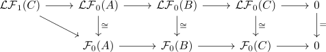

left derived functor of an additive functor and right exactness
Proposition
Let $\mathcal{A}, \mathcal{B}$ be abelian categories, where $\mathcal{A}$ admits enough projectives Suppose $\mathcal{F}: \mathcal{A} \rightarrow \mathcal{B}$ is an additive functor and $\mathcal{LF}_n$ the left derived functor of an additive functor
TFAE:
- $\mathcal{F}$ is right exact functor
- $\mathcal{LF}_0 \cong \mathcal{F}$ are naturally isomorphic
Proof
1) $\implies$ 2)
see:
- left derived functor of a right exact functor
2) $\implies$ 1)
follows from:
where for a short exact sequence

we get the following diagram
